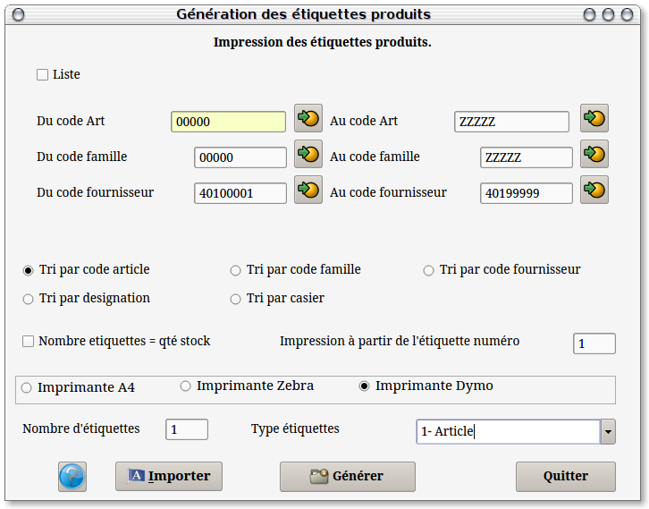
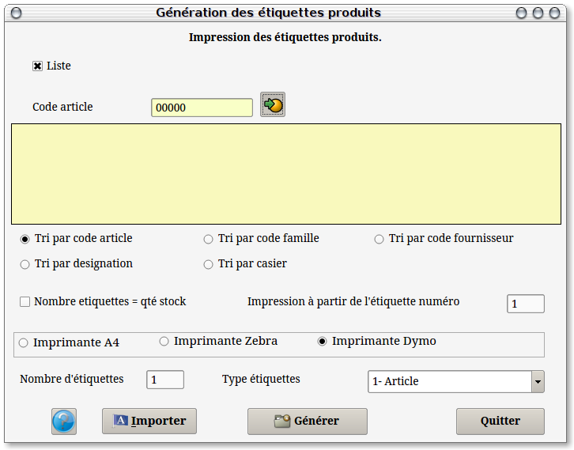
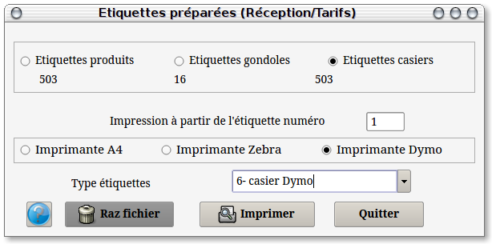

~ Comptabilité et Facturation Laurux ~

~ Comptabilité et Facturation Laurux ~ |
|
|
|

Ce programme vous permet de préparer les étiquettes produits ou de gondole de deux façons. Soit pour une liste saisie manuellement soit pour une liste automatique de produits, pour une liste de familles ou pour une liste de fournisseurs.
1- Liste automatique.
Une fois défini la liste des produits à
imprimer, on va pouvoir choisir l'ordre de tri en cochant le bouton
souhaité, soit dans l'ordre des codes, soit dans l'ordre des familles
ou dans celui des codes des fournisseurs ou bien encore dans l'ordre
des désignations.

2- Liste manuelle.
On coche le bouton "Liste" puis on saisit les codes produits qui vont s'ajouter dans la liste. On peut aussi utiliser un lecteur optique pour saisir les produits.
On peut aussi définir manuellement le nombre d'étiquettes pour chaque produit ou alors on peut determiner ce nombre à partir de la quantité en stock du produit et enfin, on peut également fournir un numéro d'ordre pour le début de l'impression, ce qui est utile lorsqu'une planche d'étiquettes a été en partie déjà utilisée.

Ce programme vous permet de
préparer les étiquettes produits ou de gondole pour les produits
réceptionnés. Veuillez consulter SVP la page sur les Généralités
sur les étiquettes
pour plus de détails sur les étiquettes de réception.
Le nombre d'étiquettes à imprimer
s'affiche pour chaque type d'étiquettes.
Si vous ne souhaitez pas imprimer les
étiquettes cliquez sur le bouton "Raz fichier" afin de remettre à blanc
le fichier du type des étiquettes séléctionné.
----------------------------------------------------------------------------------------------------------------------